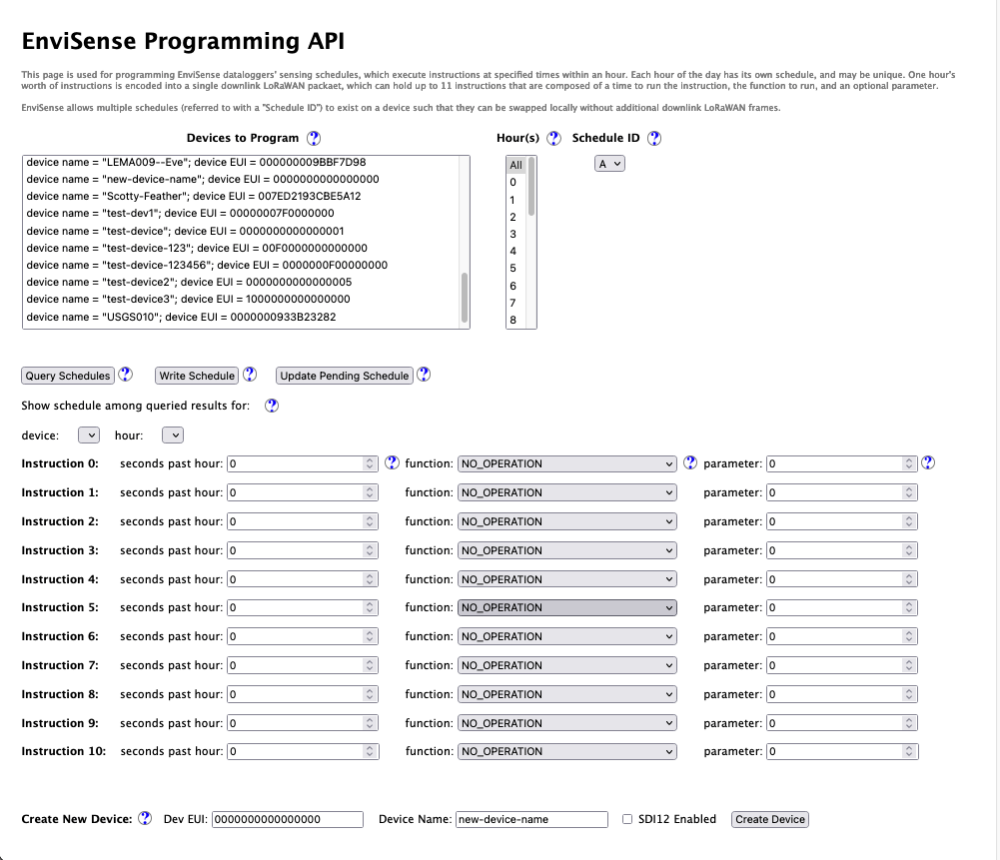

EnviSense
In the first two years of grad school, a solid chunk of my time went to EnviSense, an environmental sensing project with the U.S. Geological Survey (USGS). The research group I joined had a long-standing relationship with the USGS, in which they were updating existing water stream gages in Northern California to use battery-operated sensors connected via LoRaWAN.
Our main contact at the USGS, Matt Marineau, saw opportunity to upgrade their sensors, particularly in how they retrieve information and modify sensor behavior. Existing sensors either log all measurements, like stream height, water pH, soil moisture content, etc. to an SD that must be retrieved months later or uplink all measurements over a one-way satellite link. In both cases, there is no way to configure what the sensors measure and how often.
When power is widely available, it's no biggie. There's little penalty to collecting everything possible. The modern data deluge is of no importance on single-dimension time-series signals sampled every 30 seconds, at most. But sensors beneath a canopy of trees 10 miles from the nearest powerline play a different game. Every extra sample-and-send means a technician has to trek through the brush and bugs to replace a battery a bit sooner, and this isn't free. Some sites may allow solar or other energy harvesting, but that is not always sufficient (or cost effective) to power the sensor. Instead, we'd like a way to modify sensor behavior over-the-air to optimize between data quality (value) and sensor lifetime (expense). This is especially true when the qualities of interest, like rapid stream changes due to rainfall, only happen when, well, it rains. We can use predictions like weather forecasts to determine how to modulate how sensors sense the environment!
This main idea of remote reprogramming was a huge focus throughout my two years on the project. However, many of these ideas have been explored in wireless sensor networking communities already, and as such, the opportunity for novel research was limited — this was 'just engineering'. No less, systems like these are a good bridge between academic research and industry adoption — it is an exercise in systems engineering, and while the research aspect of this could have been 'more ambitious' as some said, there were noteworthy, extant aspects of the EnviSense that I believed warranted a paper in a low-power IoT workshop before pushing for anything truly novel. I view the linked paper as description of good systems architecting for an LPWAN-enabled environmental sensing system.
My Contributions
I cannot and will not claim that the EnviSense system was entirely my design and implementation. A vast majority of the credit goes to Bob Iannucci (and several students in one of his courses, in which they designed the overall architecture and first versions of the system) -- his systems engineering expertise was valuable in ways I cannot explain. I'm grateful to have worked on him with this project, as I learned countless lessons in systems engineering (and would love to continue archtitecting, designing, and implementing systems like this in urban, industrial, and/or environmental domains). Nonetheless, I'll speak to the contriubtions I did make. NB: The list isn't exhaustive because most aren't interesting.
Remote Reprogramming
EnviSense's version of remote reprogramming was conceptually very simple (and designed and implemented before my time) — basically, sensors sampled according to a short set of commands that dictated what and when to sample and uplink over LoRaWAN. These schedules fit into a single LoRaWAN downlink message (a malnourished 50 bytes under reasonable network conditions), and tell the sensor what it will do within an hour. Again, this was implemented before I arrived on the scene.
My contributions to this part of system involved extending it to implement multiple schedules to let USGS personnel swap between those locally stored schedules without constantly downloading new ones (burning energy in the process — LoRa may be low power, but the energy cost per bit is quite high. The LP and WAN are separate in the MAC layer and PHY layer characteristics, respectively). Swapping these schedules is was quite simple. Most of the building blocks were already there within the production level system. The harder part was in adding this feature was in the server-side, which stores versioned schedules in a SQL database and serves them in an application server configured to run when the EnviSense sensor uplinks the right messages over the network. More pointedly, adding this feature without confusing or breaking any deployed sensors whose firmware could not be updated. After doing the math, this change with multiple schedules has the potential to improve battery life by about 350% while still producing the same quality data when it counts (assuming weather predictions are accurate, which may be a LongSHoT).
Another, simpler contribution was in upgrading the SDI-12 firmware to optimize how many and how custom the sensing schedule needed to be for EnviSense devices with multiple SDI-12 transducers attached. SDI-12 is no more than common interface for environmental sensors; the USGS uses lots of these sensors, partially because multilple can be connected to the same wires. For example, they wanted soil moisture probes and multiple depths, all connected to one EnviSense. I implemented a portion of the remote programming interface so they could read 'everything but the kitchen sink' (naming credit goes to Bob, as he did something similar to the auxiliary sensors on the PCB).
LoRa Survey
LoRaWAN is an example of a low-power wide area network. Networks can span several miles, and end-devices can last for months or years — networks like cellular work poorly for low power because they require frequent check-ins to the network infrastructure, whereas LoRaWAN does not. The range of the network is simply based on the form of the physical signal (the modulation); chirp-spread spectrum is resilient to noise and multipath such that it can be retrieved even below the noise floor (especially when modulated vveeerrryyy slowly). It's also nice because network hardware is cheap enough to create your own network in public-access frequency bands such that it can be used almost anywhere (cellular would require the provider to install a base station — not cheap!).
Yet, setting up your own network is hard. Engineers have dedicated their careers to configuring cellular networks. Assuring service to many devices requires complex planning to use the minimal amount of infrastruture (reducing cost) while providing an acceptable level of service to all connected devices. We'd like USGS technicians to be able to setup a gateway at some high elevation and explore the area with LoRaWAN receivers at prospective sensors sites, producing maps showing signal quality to help determine if those prospects are viable (for that gateway placement). For the EnviSense system, I enabled this on the sensors themselves, which already had GPS and LoRa radios, such that the sensors could be carried to prospective sensing sites and have their GPS coordinates and signal quality measured, logged (and if connected to the network, uplink that info for real-time feedback).
I always love to reuse existing mechanisms in new ways, beyond their original intent. The remote programming mechanism I mentioned before was repurposed in exactly that way. I made a few additions to the features and functions within that scheduling to continuously read GPS coordinates and the most recent signal quality parameters (RSSI and SNR). That way, those location-sensitive quantities would be logged locally and uplinked over that LoRaWAN connection (where the latter can only occur if the wireless link is strong enough). With this tool, USGS personnel can conduct their own LoRa surveys with no additional hardware, such that they can see if prospective sensor deployment sites are accessible over a wireless link.
Programming APIs and Web-page
The Remote Programming mechanisms, for obvious reasons, extend further than the EnviSense hardware and firmware itself. All the information about these schedules is stored within the same server that responds to uplink requests and stores sensor data. Accessing that information is not particularly glamorous, though. It exists within a SQL database, and has a very basic user interface (via a PHP frontend, phpMyAdmin) that is difficult for the uninitiated to navigate. My last contribution to the EnviSense project was an API and supporting webserver to help users program sets of EnviSense devices.

I'll be the first to admit that it isn't the prettiest UI, but the intent was to provide a simpler interface that only exposes a few necessary functions. In short, USGS personnel would want to see which devices they have, what schedules they are running, write/update schedules, and register a new EnviSense. I created each of these functionalities (and plenty of other helper functions) within an API written in NodeJS that directly interacts with the SQL database and ChirpStack (the LoRaWAN service that runs MAC in the Cloud). The front-end was implemented using the ExpressJS web framework, and most of the buttons and selection elements produced some API call for the backend that would be populated with the proper information on return, accompanied by notification of success or failure for the user.
Altogheter, this is a pretty straightforward tool, although it was the first I've done any real web programming. I had plenty to learn about the front-end/back-end interactions and how elements within a webpage are programmatically controlled. At the end of the day, I'm hopefult this will be (or at least the makings of) a useful tool for working with larger networks of EnviSense devices. Had I another 2-3 weeks to work on this project, I would have extended the API a bit more to also interact with meterological feeds such that these schedules updates could be automatically produced by changes in weather patterns, creating a fully autonomous, adapative sensing system. This is perhaps the most interesting technological aspect to the project, in my opinion as the tools can work together at the micro and macroscopic scale to optimize/trade-off data quality and cost.
For anyone interested in actually seeing how it works, I produced a Demonstration Video.
Lessons About Sensor Networks and Systems Engineering
I learned a great deal in this project, particularly about systems engineering. My ideal role in my career is a systems engineer, as I like to be engaged at the higher level of an engineering project, considering all the requirements and constraints to produce a dependable architecture that integrates all the low level pieces (which I'm certainly not afraid of building myself). Here, I'd like to point out a few of the salient lessons.
This was my first chance at working with a distributed system. Multiple sensors interact with the physical environment, communicate with gateways, which shuttle to and from servers with persistent data store and configuration information. One of the first things I learned here is that issues in one component often cascade into another, especially if care is not taken in their construction. For instance, a sensor requests a schedule — responding with an incorrectly formatted schedule is worse than responding with none at all, as it may put the end device into an unstable state (which could force a watchdog reset, muck up sensing behavior, or lead the device to quickly drain its battery). Isolation and error handling is essential to preventing a larger failure. Further, having instrumentation to detect faults and trace errors is essential to fixing them, which we often did through time-series data display (Grafana) and extensive local logging.
As I mentioned previously, I do not take credit for the majority of the implementation of this system. While I could ask questions to the designer who knew all the answers, I was nonetheless working with something resembling a legacy system in that it predated me, and I should not 'clean state' anything known to work (without good reason and discussion). This proved a valuable exercise in adopting coding style conventions consistent with the rest of the project so that anything I wrote would be maintainable after I left. I consider this a lesson in coding practices (a concept my undergraduate background as an electrical engineer did not cover). At Bob's behest, I followed a practice of 'economy of mechanism', meaning that existing, proven mechanisms should be reused without introducing new ones, while simulataneously avoiding 'hacks' to use them in dangerous ways. This practice is most evident in the improvements I made to the Remote Programming/Scheduling mechanisms.
This project was also my first chance working with a real customer, whereas previous internships and research projects lacked real interaction with an external party. As an engineer, I can think of all sorts of mechanisms and tools that are interesting or fun to create, but they have little use with no one to use them. A customer helps bring the lofty ideas down to earth, as they know (parts of) what they need, but not necessarily how to put them into practice. In this project, I was happy to find that this was not a one-way interaction where the customer says 'do this', and the engineers dutifully carry that out to the 'T', but rather, both parties work together to define the set of goals, requirements, and constraints so the system can be physically realized in accordance with those goals. Through this relationship, I became comfortable supporting the implementation with demonstration, documentation, and support.
Altogether, I could not have asked for a better learning experience in systems engineering, especially when it got me out to the golden, rolling hills of Northern California. I look forward to carrying these lessons into future engineering projects.